Section 3.9 Summary of Graphing Lines
The previous several sections have demonstrated several methods for plotting a graph of a linear equation. In this section, we review these methods.
We have learned three forms to write a linear equation:
- slope-intercept form\begin{equation*} y=mx+b \end{equation*}
- point-slope form\begin{equation*} y=m\left(x-x_0\right)+y_0 \end{equation*}
- standard form\begin{equation*} Ax+By=C \end{equation*}
We have studied two special types of line:
- horizontal line\begin{equation*} y=k \end{equation*}
- vertical line\begin{equation*} x=h \end{equation*}
We have practiced three ways to graph a line:
- building a table of \(x\)- and \(y\)-values
- plotting one point (often the \(y\)-intercept) and drawing slope triangles
- plotting its \(x\)-intercept and \(y\)-intercept
Subsection 3.9.1 Graphing Lines in Slope-Intercept Form
In the following examples we will graph \(y=-2x+1\text{,}\) which is in slope-intercept form, with different methods and compare them.
Example 3.9.2. Building a Table of \(x\)- and \(y\)-values.
First, we will graph \(y=-2x+1\) by building a table of values. In theory this method can be used for any type of equation, linear or not.
| \(x\)-value | \(y\)-value | Point |
| \(\highlight{-2}\) | \(y=-2(\substitute{-2})+1=5\) | \((-2,5)\) |
| \(\highlight{-1}\) | \(y=-2(\substitute{-1})+1=3\) | \((-1,3)\) |
| \(\highlight{0}\) | \(y=-2(\substitute{0})+1=1\) | \((0,1)\) |
| \(\highlight{1}\) | \(y=-2(\substitute{1})+1=-1\) | \((1,-1)\) |
| \(\highlight{2}\) | \(y=-2(\substitute{2})+1=-3\) | \((2,-3)\) |

Example 3.9.5. Using Slope Triangles.
Although making a table is straightforward, the slope triangle method is faster and reinforces the true meaning of slope. With the slope triangle method, we first identify some point on the line. Given a line in slope-intercept form, we know the \(y\)-intercept. For the line \(y=2x+1\text{,}\) the \(y\)-intercept is \((0,1)\text{.}\) Plot this first, and then we can draw slope triangles in both directions to find more points.


Compared to the table method, the slope triangle method:
- is less straightforward;
- doesn’t take the time and space to make a table;
- doesn’t involve lots of calculations where you might make a human error;
- shows slope triangles, which reinforces the meaning of slope.
Example 3.9.8. Using intercepts.
If we use the \(x\)- and \(y\)-intercepts to plot \(y=-2x+1\text{,}\) we have some calculation to do. While it is apparent that the \(y\)-intercept is at \((0,1)\text{,}\) where is the \(x\)-intercept?
Set \(y=0\text{.}\)
\begin{align*}
y\amp=-2x+1\\
\substitute{0}\amp=-2x+1\\
0\subtractright{1}\amp=-2x\\
-1\amp=-2x\\
\divideunder{-1}{-2}\amp=x\\
\frac{1}{2}\amp=x
\end{align*}
So the \(x\)-intercept is at \(\left(\frac{1}{2},0\right)\text{.}\) Plotting both intercepts:
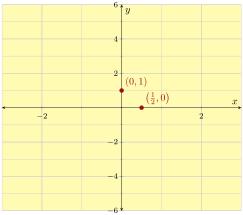

This worked, but here are some observations about why this method is not the greatest.
- We had to plot a point with a fraction in its coordinates.
- We only plotted two points and they turned out very close to each other, so even the slightest inaccuracy in our drawing skills could result in a line that is way off.
When a line is presented in slope-intercept form and \(b\) is an integer, our opinion is that the slope triangle method is the best choice for making its graph.
Subsection 3.9.2 Graphing Lines in Point-Slope Form
When we graph a line in point-slope form (3.6.1) like \(y=\frac{2}{3}(x+1)+3\text{,}\) the slope triangle method is the obvious choice. We can see a point on the line, \((-1,3)\text{,}\) and the slope is apparent: \(\frac{2}{3}\text{.}\) Here is the graph:

Other graphing methods would take more work and miss the purpose of point-slope form (3.6.1). To graph a line in point-slope form (3.6.1), we recommend always using slope triangles.
Subsection 3.9.3 Graphing Lines in Standard Form
In the following examples we will graph \(3x+4y=12\text{,}\) which is in standard form, with different methods and compare them.
Example 3.9.12. Building a Table of \(x\)- and \(y\)-values.
To make a table, we could substitute \(x\) for various numbers and use algebra to find the corresponding \(y\)-values. Let’s start with \(x=-2\text{,}\) planning to move on to \(x=-1,0,1,2\text{.}\)
\begin{align*}
3x+4y\amp=12\\
3(\substitute{-2})+4y\amp=12\\
-6+4y\amp=12\\
4y\amp12\addright{6}\\
4y\amp=18\\
y\amp=\divideunder{18}{4}=\frac{9}{2}
\end{align*}
The first point we found is \(\left(-2,\frac{9}{2}\right)\text{.}\) This has been a lot of calculation, and we ended up with a fraction we will have to plot. And we have to repeat this process a few more times to get more points for the table. The table method is generally not a preferred way to graph a line in standard form (3.7.1). Let’s look at other options.
Example 3.9.13. Using intercepts.
Next, we will try graphing \(3x+4y=12\) using intercepts. We set up a small table to record the two intercepts:
| \(x\)-value | \(y\)-value | Intercept | |
| \(x\)-intercept | \(0\) | ||
| \(y\)-intercept | \(0\) |
We have to calculate the line’s \(x\)-intercept by substituting \(y=0\) into the equation:
\begin{align*}
3x+4y\amp=12\\
3x+4(\substitute{0})\amp=12\\
3x\amp=12\\
x\amp=\divideunder{12}{3}\\
x\amp=4
\end{align*}
And similarly for the \(y\)-intercept:
\begin{align*}
3x+4y\amp=12\\
3(\substitute{0})+4y\amp=12\\
4y\amp=12\\
y\amp=\divideunder{12}{4}\\
y\amp=3
\end{align*}
So the line’s \(x\)-intercept is at \((4,0)\) and its \(y\)-intercept is at \((0,3)\text{.}\) Now we can complete the table and then graph the line:
| \(x\)-value | \(y\)-value | Intercepts | |
| \(x\)-intercept | \(4\) | \(0\) | \((4,0)\) |
| \(y\)-intercept | \(0\) | \(3\) | \((0,3)\) |

Example 3.9.16. With Slope Triangles.
We can always rearrange \(3x+4y=12\) into slope-intercept form, and then graph it with the slope triangle method:
\begin{align*}
3x+4y\amp=12\\
4y\amp=12\subtractright{3x}\\
4y\amp=-3x+12\\
y\amp=\divideunder{-3x+12}{4}\\
y\amp=-\frac{3}{4}x+3
\end{align*}
With the \(y\)-intercept at \((0,3)\) and slope \(-\frac{3}{4}\text{,}\) we can graph the line using slope triangles:

Compared with the intercepts method, the slope triangle method takes more time, but produces points and so makes a more accurate graph. Also sometimes (as with Example 3.7.14) when we graph a standard form equation like \(2x-3y=0\text{,}\) the intercepts method doesn’t work because both intercepts are actually at the same point (at the origin), and we have to resort to something else like slope triangles anyway.
Here are some observations about graphing a line equation that is in standard form (3.7.1):
- The intercepts method might be the quickest approach.
- The intercepts method only tells us two intercepts of the line. When we need to know more information, like the line’s slope, and get a more accurate graph, we should take the time to convert the equation into slope-intercept form.
- When \(C=0\) in a standard form equation (3.7.1) we cannot use the intercepts method to plot the line anyway.
Subsection 3.9.4 Graphing Horizontal and Vertical Lines
We learned in Section 8 that equations in the form \(x=h\) and \(y=k\) make vertical and horizontal lines. But perhaps you will one day find yourself not remembering which is which. Making a table and plotting points can quickly remind you which type of equation makes which type of line. Let’s build a table for \(y=2\) and another one for \(x=-3\text{:}\)
| \(x\)-value | \(y\)-value | Point |
| \(0\) | \(2\) | \((0,2)\) |
| \(1\) | \(2\) | \((1,2)\) |
| \(x\)-value | \(y\)-value | Point |
| \(-3\) | \(0\) | \((-3,0)\) |
| \(-3\) | \(1\) | \((-3,1)\) |
With two points on each line, we can graph them:


Exercises 3.9.5 Exercises
Graphing by Table.
1.
Use a table to make a plot of \(y=4x+3\text{.}\)
Answer.
| \(x\) | \(y\) |
| \(-2\) | \(-5\) |
| \(-1\) | \(-1\) |
| \(0\) | \(3\) |
| \(1\) | \(7\) |
| \(2\) | \(11\) |
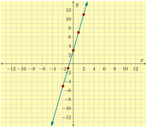
2.
Use a table to make a plot of \(y=-5x-1\text{.}\)
Answer.
| \(x\) | \(y\) |
| \(-2\) | \(9\) |
| \(-1\) | \(4\) |
| \(0\) | \(-1\) |
| \(1\) | \(-6\) |
| \(2\) | \(-11\) |
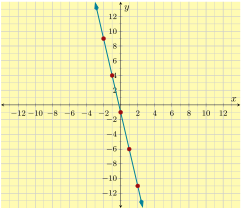
3.
Use a table to make a plot of \(y=-\frac{3}{4}x-1\text{.}\)
Answer.
| \(x\) | \(y\) |
| \(-8\) | \(5\) |
| \(-4\) | \(2\) |
| \(0\) | \(-1\) |
| \(4\) | \(-4\) |
| \(8\) | \(-7\) |
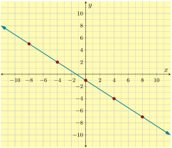
4.
Use a table to make a plot of \(y=\frac{5}{3}x+3\text{.}\)
Answer.
| \(x\) | \(y\) |
| \(-6\) | \(-7\) |
| \(-3\) | \(-2\) |
| \(0\) | \(3\) |
| \(3\) | \(8\) |
| \(6\) | \(13\) |
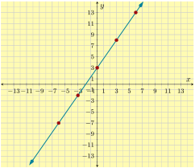
Graphing Standard Form Equations.
5.
First find the \(x\)- and \(y\)-intercepts of the line with equation \(6x+5y=-90\text{.}\) Then find one other point on the line. Use your results to graph the line.
Answer.
\begin{align*}
x\text{-intercept:}~\amp(-15,0)\\
y\text{-intercept:}~\amp(0,-18)\\
\text{another point:}~\amp(-10,-6)
\end{align*}
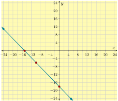
6.
First find the \(x\)- and \(y\)-intercepts of the line with equation \(2x-3y=-6\text{.}\) Then find one other point on the line. Use your results to graph the line.
Answer.
\begin{align*}
x\text{-intercept:}~\amp(-3,0)\\
y\text{-intercept:}~\amp(0,2)\\
\text{another point:}~\amp(6,6)
\end{align*}
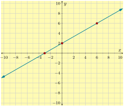
7.
First find the \(x\)- and \(y\)-intercepts of the line with equation \(3x+y=-9\text{.}\) Then find one other point on the line. Use your results to graph the line.
Answer.
\begin{align*}
x\text{-intercept:}~\amp(-3,0)\\
y\text{-intercept:}~\amp(0,-9)\\
\text{another point:}~\amp(1,-12)
\end{align*}
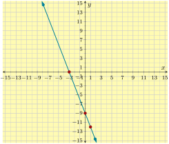
8.
First find the \(x\)- and \(y\)-intercepts of the line with equation \(-15x+3y=-3\text{.}\) Then find one other point on the line. Use your results to graph the line.
Answer.
\begin{align*}
x\text{-intercept:}~\amp(0.2,0)\\
y\text{-intercept:}~\amp(0,-1)\\
\text{another point:}~\amp(1,4)
\end{align*}
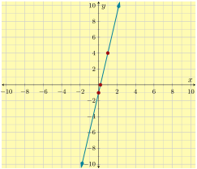
9.
First find the \(x\)- and \(y\)-intercepts of the line with equation \(4x+3y=-3\text{.}\) Then find one other point on the line. Use your results to graph the line.
Answer.
\begin{align*}
x\text{-intercept:}~\amp(-0.75,0)\\
y\text{-intercept:}~\amp(0,-1)\\
\text{another point:}~\amp(-3,3)
\end{align*}
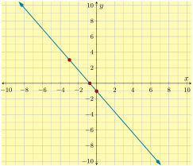
10.
First find the \(x\)- and \(y\)-intercepts of the line with equation \(-4x-5y=5\text{.}\) Then find one other point on the line. Use your results to graph the line.
Answer.
\begin{align*}
x\text{-intercept:}~\amp(-1.25,0)\\
y\text{-intercept:}~\amp(0,-1)\\
\text{another point:}~\amp(-5,3)
\end{align*}
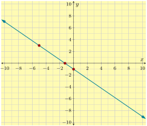
11.
First find the \(x\)- and \(y\)-intercepts of the line with equation \(5x-3y=0\text{.}\) Then find one other point on the line. Use your results to graph the line.
Answer.
\begin{align*}
x\text{-intercept:}~\amp(0,0)\\
y\text{-intercept:}~\amp(0,0)\\
\text{another point:}~\amp(3,5)
\end{align*}
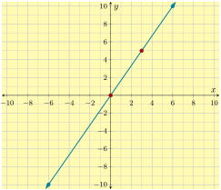
12.
First find the \(x\)- and \(y\)-intercepts of the line with equation \(2x+9y=0\text{.}\) Then find one other point on the line. Use your results to graph the line.
Answer.
\begin{align*}
x\text{-intercept:}~\amp(0,0)\\
y\text{-intercept:}~\amp(0,0)\\
\text{another point:}~\amp\left(-6,\frac{4}{3}\right)
\end{align*}
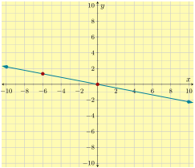
Graphing Slope-Intercept Equations.
13.
Use the slope and \(y\)-intercept from the line \(y=-5x\) to plot the line. Use slope triangles.
Answer.
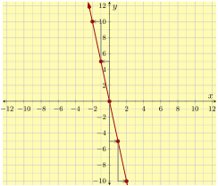
14.
Use the slope and \(y\)-intercept from the line \(y=3x-6\) to plot the line. Use slope triangles.
Answer.
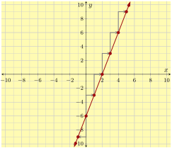
15.
Use the slope and \(y\)-intercept from the line \(y=-\frac{2}{5}x+2\) to plot the line. Use slope triangles.
Answer.
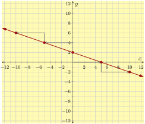
16.
Use the slope and \(y\)-intercept from the line \(y=\frac{10}{3}x-3\) to plot the line. Use slope triangles.
Answer.
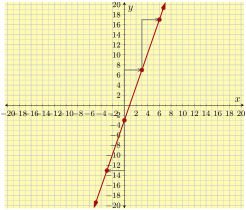
Graphing Horizontal and Vertical Lines.
17.
Plot the line \(y=1\text{.}\)
Answer.
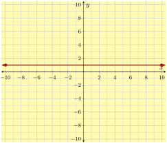
18.
Plot the line \(y=-4\text{.}\)
Answer.
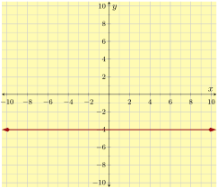
19.
Plot the line \(x=-8\text{.}\)
Answer.
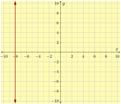
20.
Plot the line \(x=5\text{.}\)
Answer.
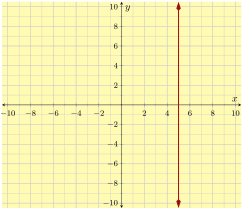
Choosing the Best Method to Graph Lines.
21.
Use whatever method you think best to plot \(y=2x+2\text{.}\)
Answer.
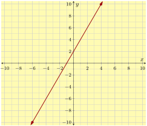
22.
Use whatever method you think best to plot \(y=-3x+6\text{.}\)
Answer.
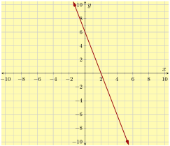
23.
Use whatever method you think best to plot \(y=-\frac{3}{4}x-1\text{.}\)
Answer.
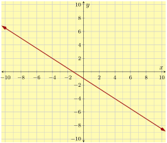
24.
Use whatever method you think best to plot \(y=\frac{5}{3}x-3\text{.}\)
Answer.
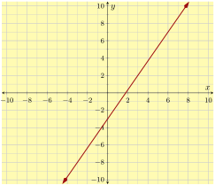
25.
Use whatever method you think best to plot \(y=-\frac{3}{4}(x-5)+2\text{.}\)
Answer.
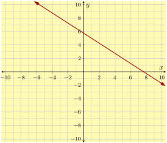
26.
Use whatever method you think best to plot \(y=\frac{2}{5}(x+1)-3\text{.}\)
Answer.
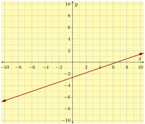
27.
Use whatever method you think best to plot \(3x+2y=6\text{.}\)
Answer.
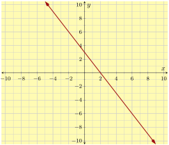
28.
Use whatever method you think best to plot \(5x-4y=8\text{.}\)
Answer.
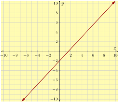
29.
Use whatever method you think best to plot \(3x-4y=0\text{.}\)
Answer.
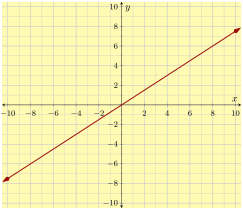
30.
Use whatever method you think best to plot \(9x+6y=0\text{.}\)
Answer.
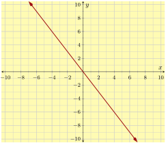
31.
Use whatever method you think best to plot \(x=-3\text{.}\)
Answer.
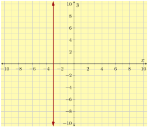
32.
Use whatever method you think best to plot \(x=2\text{.}\)
Answer.
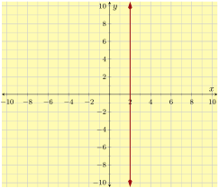
33.
Use whatever method you think best to plot \(y=-7\text{.}\)
Answer.
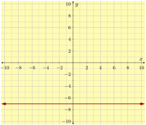
34.
Use whatever method you think best to plot \(y=5\text{.}\)
Answer.
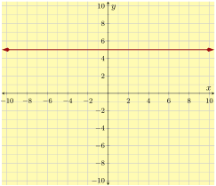